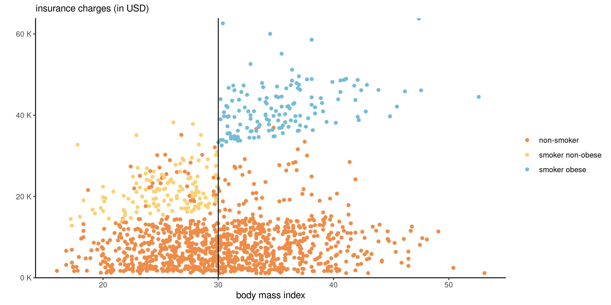
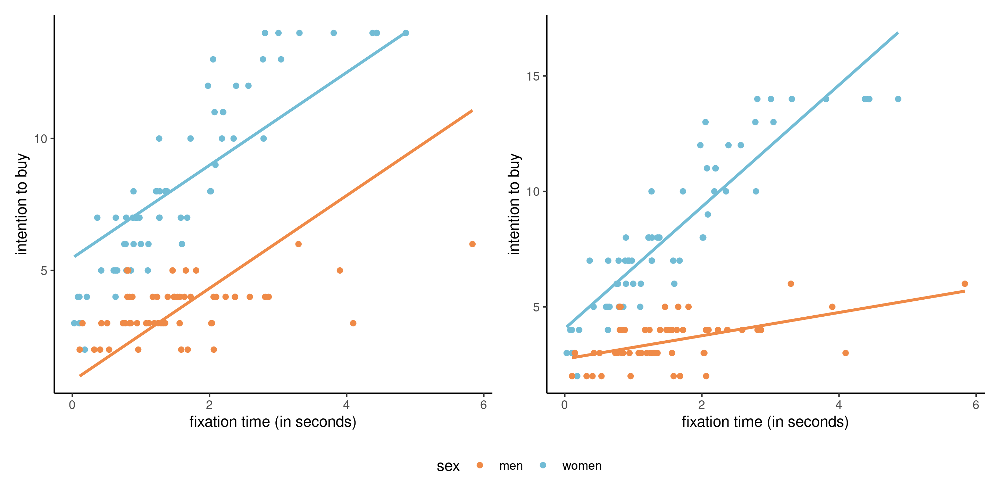
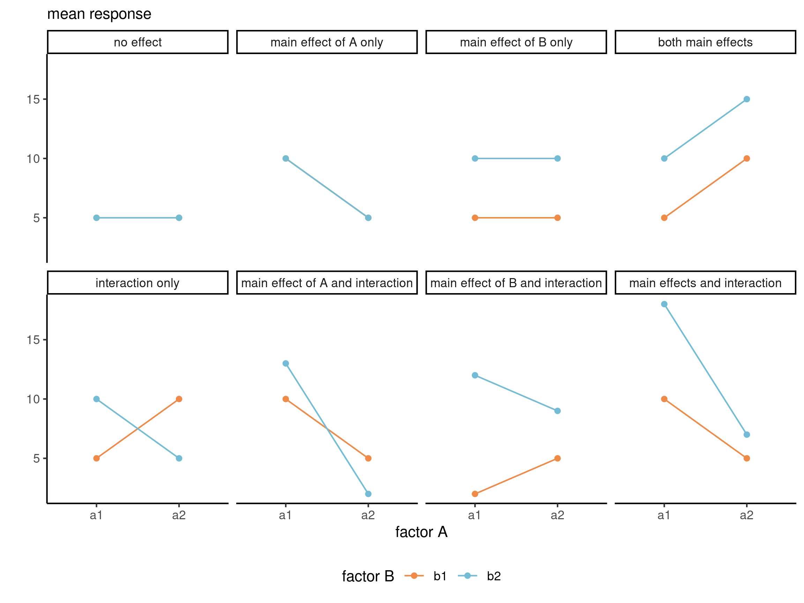
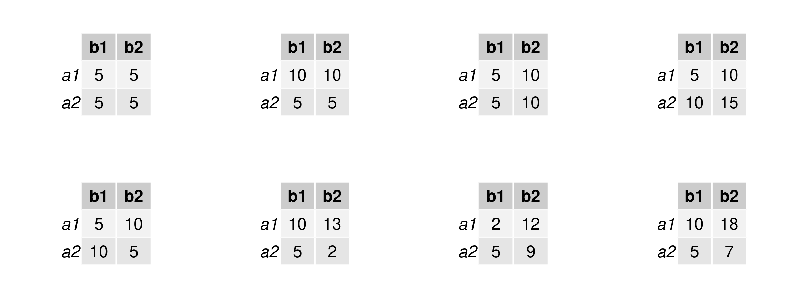
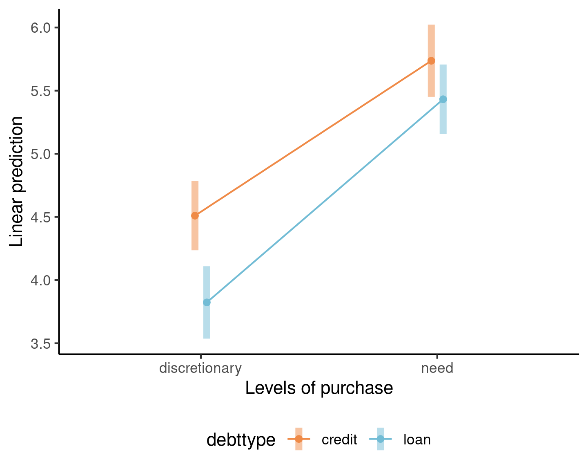
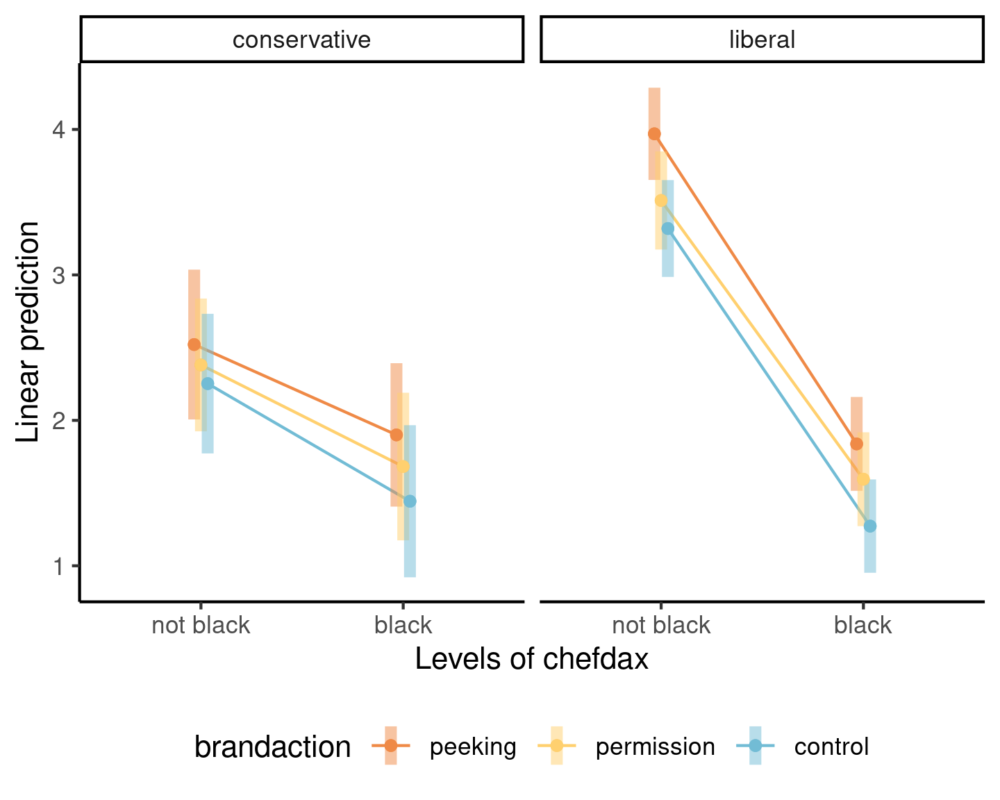

An interaction occurs if some explanatory variables, when coupled together, have different impacts than the superposition of each.
If \(X_j\) and \(X_k\) interact, the marginal effect of \(\mathsf{E}(Y \mid \boldsymbol{X})\) with respect to \(X_j\) is a function of \(X_k\) or vice-versa.
We will restrict attention to the cases where one or more of the explanatories is a categorical variable (factor).
Insurance premium
Smokers who have a BMI of 30 and above pay a hefty premium, but there is also seemingly a linear increase in the amount charged with BMI. We see no such behaviour for non-smokers.

Figure 1: Graph of insurance charges against body mass index, colored by smoking status.
Toy example 1 – continuous vs categorical
We consider a toy model for the interaction data. The base model, without interaction, is \[\begin{align*}
\texttt{intention}=\beta_0 + \beta_1 \texttt{sex} + \beta_2 \texttt{fixation} + \varepsilon,
\end{align*}\] where \(\texttt{sex=1}\) for women and \(\texttt{sex=0}\) for men.
The effect of fixation in this model is the same regardless of sex.
In order to add a different slope for men and women, we can create a new variable equal to the product \(\texttt{fixation}\times\texttt{sex}\) and add it to the model, \[\begin{align*}
\mathsf{E}(\texttt{intention} \mid \cdot)= \beta_0 + \beta_1 \texttt{sex} + \beta_2\texttt{fixation} + \beta_3 \texttt{fixation}\cdot \texttt{sex}.
\end{align*}\]
Is there an interaction?

Figure 2: Scatterplots and fitted lines for a model with a single continuous and binary explanatory, without (left) and with (right) an interaction term.
Parameter interpretation
Depending on the value of the binary variable \(\texttt{sex}\), we get \[\begin{align*}
\mathsf{E}(\texttt{intention} \mid \cdot) =
\begin{cases}
(\beta_0 + \beta_1) + (\beta_2 + \beta_3)\texttt{fixation}, & \texttt{sex}=1 \text{ (women)},\\
\beta_0 + \beta_2 \texttt{fixation}, & \texttt{sex}=0 \text{ (men)}.
\end{cases}
\end{align*}\] The interpretation of the coefficients in the model is as usual with the treatment contrast parametrization:
\(\beta_0\) is the average buying intention when the fixation time is zero for men,
\(\beta_1\) is the difference in intercept for women vs men,
\(\beta_2\) is the unit increase in intention to buy per second of fixation for men,
\(\beta_3\) is the difference in slope for women vs men.
Testing for an interaction
Testing whether the interaction is significant boils down to using the test \(\mathscr{H}_0: \beta_3=0\).
data(interaction, package ="hecstatmod")# To specify an interaction use :mod <-lm(intention ~ sex + fixation + sex:fixation, data = interaction)# A shortcut is sex*fixation, which expands to the abovesummary(mod)$coefficients## Estimate Std. Error t value Pr(>|t|)## (Intercept) 2.7 0.28 9.7 1.0e-16## sex 1.3 0.38 3.5 7.7e-04## fixation 0.5 0.15 3.3 1.3e-03## sex:fixation 2.1 0.20 10.7 5.6e-19
The model with the interaction is significantly better, meaning that the effect of fixation time on intention to buy varies according to sex.
Marginality principle
All lower interaction terms should be included if an interaction is present.
For example, we would not remove \(\texttt{fixation}\) while keeping the interaction term \(\texttt{fixation*sex}\), even if we fail to reject \(\mathscr{H}_0:\beta_2=0\) because otherwise \[\begin{align*}
&\mathsf{E}(\texttt{intention} \mid \cdot) =
\begin{cases}
(\beta_0 + \beta_1) + \beta_3\texttt{fixation}, & \texttt{sex}=1 \text{ (women)},\\
\beta_0, &\texttt{sex}=0 \text{ (men)};
\end{cases}
\end{align*}\]
this implies that intention to buy is constant for men, regardless of the fixation time.
As the choice of baseline is arbitrary, changing the dummy (\(\texttt{0}\) for women, \(\texttt{1}\) for men), would yield a different model and so potentially different inferences.
Example 2 - categorical vs categorical
Consider a linear model with factors \(A\) and \(B\) and their interactions.
This is a two-way ANOVA model, in which each subgroup \((a_i, b_j)\) has a different mean \(\mu_{ij}\).
e.g., if \(A\) has \(n_a=3\) levels and \(B\) has \(n_b=2\) levels.
\(\qquad B\) \(A\)\(\qquad\)
\(b_1\)
\(b_2\)
\(\text{row mean}\)
\(a_1\)
\(\mu_{11}\)
\(\mu_{12}\)
\(\mu_{1.}\)
\(a_2\)
\(\mu_{21}\)
\(\mu_{22}\)
\(\mu_{2.}\)
\(a_3\)
\(\mu_{31}\)
\(\mu_{32}\)
\(\mu_{3.}\)
\(\text{column mean}\)
\(\mu_{.1}\)
\(\mu_{.2}\)
\(\mu\)
Row, column and overall averages are equiweighted combinations of the cell means \(\mu_{ij}\).
Sample estimates are obtained by replacing \(\mu_{ij}\) by subgroup sample means.
Interaction plot
Plot the averages (with confidence intervals) as a function of the explanatories.
If lines are parallel, then there is no interaction.

Figure 3: Interaction plots for 2 by 2 designs. Illustration adapted from Figure 10.2 of Crump, Navarro and Suzuki (2019) by Matthew Crump (CC BY-SA 4.0 license)
Cell means for 2 by 2 designs

Table 1: Patterns for means for each of the possible kinds of general outcomes in a 2 by 2 design.
Example 1 : loans versus credit
Supplementary study 5 of Sharma, Tully, and Cryder (2021) consists of a \(2 \times 2\) between-subject (i.e., no repeated measure per individual) ANOVA with factors
debt type (debttype), either “loan” or “credit”
purchase type, either discretionary or not (need)

No evidence of interaction.
Example 2 - cultural appropriation
Study 4 of Lin et al. (2024) uses a \(3 \times 2 \times 2\) between-subject ANOVA focused on cultural appropriation for a soul food recipe cookbook from Chef Dax with factors
chefdax: ethnicity, either black or not black
politideo: political ideology, either conservative or liberal
brandaction: how recipes were obtained by Chef Dax, either peeking, with permission or no mention (control).

Interaction between chefdax (ethnicity) and ideology.
Analysis of variance table
The analysis of variance table compares models with (or without) \(A\), \(B\), \(AB\).
If the sample is balanced (same number of observations per subgroup), we can uniquely decompose the variance as
a model without \(AB\) would have residual sum of squares of \(\mathsf{SS}_{AB} + \mathsf{SS}_e\), but \((n_a-1)(n_b-1)\) fewer parameters.
a model without \(A\) (i.e., only factor \(B\)) would have \(n_a-1\) fewer parameter, and residual sum of squares of \(\mathsf{SS}_{A} + \mathsf{SS}_{AB} + \mathsf{SS}_e\), versus \(\mathsf{SS}_{AB} + \mathsf{SS}_e\) for the alternative.
the difference in sum of squares is \(\mathsf{SS}_A\) for \(A\), \(\mathsf{SS}_{AB}\) for the interaction \(A \times B\), etc.
Test statistic for ANOVA
If the alternative model has \(n_an_b\) parameters for the mean, and we impose \(n_a-1\) linear restrictions under the null hypothesis to the model estimated based on \(n\) independent observations, the test statistic is
\[\begin{align*}
F = \frac{\mathsf{SS}_A/(n_a-1)}{\mathsf{SS}_{e}/ (n-n_an_b)}
\end{align*}\]
The numerator is the difference in sum of squares, denoted \(\mathsf{SS}_A\), from models fitted under \(\mathscr{H}_0\) and \(\mathscr{H}_a\), divided by degrees of freedom \(n_a-1\) (number of additional parameters).
The denominator is an estimator of the variance (termed mean squared error of residuals).
We are comparing nested models, but depending on the decomposition, these are different models!
Table 2: Sum of square decompositions in ANOVA tables. Comparison of sum of squares between null, versus alternative model.
type 1
type II
type III
\(\boldsymbol{A}\)
intercept vs \(A\)
\(B\) vs \((A,B)\)
\((B, AB)\) vs \((A,B, AB)\)
\(\boldsymbol{B}\)
\(A\) vs \((A,B)\)
\(A\) vs \((A,B)\)
\((A, AB)\) vs \((A,B,AB)\)
\(\boldsymbol{AB}\)
\((A,B)\) vs \((A,B,AB)\)
\((A,B)\) vs \((A,B,AB)\)
\((A,B)\) vs \((A,B,AB)\)
Read the table backward (starting with the interaction).
Use the type II sum of square by default (default with car::Anova). Type I decomposition (anova) is sequential, while type III does not respect marginality principles.
Example 1 - perception of debt
Sharma, Tully, and Cryder (2021) conducted a 2 by 2 between-subjects comparison (two-way ANOVA) varying
the type of debt (whether the money was advertised as credit or loan) and
the type of purchase the latter would be used for (discretionary spending or need for necessary purchases).
The response is the average of the likelihood and interest in the product, both measured using a 9 point Likert scale from 1 to 9.
The mean model with an interaction can be written using the treatment contrast parametrization as \[\begin{align*}
\texttt{likelihood} &= \beta_0 + \beta_1\mathbf{1}_{\texttt{purchase=need}} + \beta_2\mathbf{1}_{\texttt{debttype=loan}} \\&\quad+ \beta_3\mathbf{1}_{\texttt{purchase=need}}\mathbf{1}_{\texttt{debttype=loan}} + \varepsilon
\end{align*}\]
Additive model
The additive model with the treatment contrast parametrization has \(1 + (n_a-1) + (n_b-1)\) parameters, with \[\mathsf{E}(Y \mid A=a_i, B=b_j) = \mu+ \alpha_i + \beta_j.\] We need a suitable constraint on \(\alpha\) and \(\beta\), e.g., \(\alpha_1=0\) (treatment contrast) or \(\sum_{i=1}^{n_a}\alpha_i=0\) (sum-to-zero constraint).
The last line of the ANOVA table with the \(F\)-statistics gives the \(p\)-value for the test comparing the model with and without the interaction term.
Fitting ANOVA and extracting group means
# Analysing Supplementary Study 5# of Sharma, Tully, and Cryder (2021)data(STC21_SS5, package ="hecedsm")# Use 'aov' to fit models to balanced data, with categorical variables# Equivalent to 'lm' with sum-to-zero contrastsmod <-aov(likelihood ~ purchase*debttype, data = STC21_SS5)# Check counts per subcategory (data are unbalanced)xtabs(~purchase + debttype, data = STC21_SS5)## debttype## purchase credit loan## discretionary 392 359## need 361 389# Compute overall/rows/columns/cells meansmeans <-model.tables(mod, type ="means")
Comparing models
# Analysis of variance reveals non-significant# interaction of purchase and typecar::Anova(mod, type =2)## Anova Table (Type II tests)## ## Response: likelihood## Sum Sq Df F value Pr(>F) ## purchase 752 1 98.21 < 2e-16 ***## debttype 92 1 12.04 0.00054 ***## purchase:debttype 14 1 1.79 0.18171 ## Residuals 11467 1497 ## ---## Signif. codes: 0 '***' 0.001 '**' 0.01 '*' 0.05 '.' 0.1 ' ' 1
In the analysis of variance table, we focus exclusively on the line purchase:debttype.
The \(F\) statistic is 1.79; using the \(\mathsf{Fisher}\) (1, 1497) distribution as null distribution, we obtain a \(p\)-value of 0.18 so there is no evidence the effect of purchase depends on debt type.
Main effects and marginalization
Main effects are comparisons between row or column averages
Obtained by marginalization, i.e., averaging over the other dimension.
Main effects are misleading if there is an interaction.
For example, the main effects of \(A\) are:
\(A\)
\(\text{row mean}\)
\(a_1\)
\(\mu_{1.}\)
\(a_2\)
\(\mu_{2.}\)
\(a_3\)
\(\mu_{3.}\)
Simple effects
When there are interactions, the effect of \(A\) depends on the value of \(B\).
Simple effects are comparisons between cell averages within a given row or column.
\(A\)
\(b_1\)
\(a_1\)
\(\mu_{11}\)
\(a_2\)
\(\mu_{21}\)
\(a_3\)
\(\mu_{31}\)
Example of main effects
Since the interaction is not significant, we can interpret the main effect of fixation.
# Pairwise comparisons within levels of purchase# Using the main effectsemmeans::emmeans(mod, # what variable to keep (so average over "debttype")specs ="purchase", contr ="pairwise")## $emmeans## purchase emmean SE df lower.CL upper.CL## discretionary 4.2 0.101 1497 4.0 4.4## need 5.6 0.101 1497 5.4 5.8## ## Results are averaged over the levels of: debttype ## Confidence level used: 0.95 ## ## $contrasts## contrast estimate SE df t.ratio p.value## discretionary - need -1.42 0.143 1497 -9.900 <.0001## ## Results are averaged over the levels of: debttype
Example 2 - Perceptions of cultural appropriation by ideology
We consider a three-way ANOVA from Lin et al. (2024). Their Study 4 focused on cultural appropriation for soul food recipe cookbook from Chef Dax, who was either black (or not), manipulating the description of the way he obtained the recipes (by peeking without permission in kitchens, by asking permission or no mention for control).
Authors postulated that the perception of appropriation would vary by political ideology (liberal or conservative). The study results in a 3 by 2 by 2 three-way ANOVA.
Example 2
For the \(K\)-way ANOVA, we always start with estimating the full model with all \(K\)-way interaction (provided there are enough data to estimate the latter, which implies there are repetitions).
Table 3: Analysis of variance table (type II decomposition) for the data from Study 4 of Lin et al. (2024).
term
sum of squares
df
stat
p-value
politideo
48.49
1
21.35
<0.001
chefdax
473.72
1
208.61
<0.001
brandaction
34.24
2
7.54
<0.001
politideo:chefdax
65.00
1
28.63
<0.001
politideo:brandaction
1.56
2
0.34
0.71
chefdax:brandaction
0.62
2
0.14
0.87
politideo:chefdax:brandaction
0.66
2
0.15
0.86
Residuals
1587.33
699
There is no three-way interaction and a single two-way interaction between political ideology and the race of Chef Dax. We cannot interpret the \(p\)-value for the main effect of brandaction, but we could look at the marginal means.
Dimension reduction and simple effects
Collapse to a 2 by 2 two-way ANOVA, averaging over brandaction.
# Marginal means for political ideology/Chef Dax# Compute simple effects, by political ideologyemmeans(mod, specs ="chefdax", by ="politideo",contrast ="pairwise")## politideo = conservative:## chefdax emmean SE df lower.CL upper.CL## not black 2.4 0.142 699 2.1 2.7## black 1.7 0.149 699 1.4 2.0## ## politideo = liberal:## chefdax emmean SE df lower.CL upper.CL## not black 3.6 0.097 699 3.4 3.8## black 1.6 0.095 699 1.4 1.8## ## Results are averaged over the levels of: brandaction ## Confidence level used: 0.95
Interpretation
We see that the liberals are much more likely to view Chef Dax cookbook as an instance of cultural appropriation if he is not black; there is limited evidence of any difference between conservatives and liberal when Chef Dax is black.
Both differences are statistically significative, but the differences (and thus evidence of an effect) is much stronger for left-leaning respondents.
Comparisons of main effects of brandaction
We expect participants will view peeking less favorably than if Chef Dax asked for permission to publish the recipes. It’s tricky to know the effect of the control, as we are not bringing the point to the attention of participants in this instance.
# Marginal mean for brandactionemm_brand <-emmeans(mod, specs =c("brandaction")) emm_brand## brandaction emmean SE df lower.CL upper.CL## peeking 2.56 0.108 699 2.35 2.77## permission 2.29 0.105 699 2.09 2.50## control 2.07 0.108 699 1.86 2.28## ## Results are averaged over the levels of: politideo, chefdax ## Confidence level used: 0.95# Joint F test for the main effect of brandactionemm_brand |>pairs() |>joint_tests()## model term df1 df2 F.ratio p.value## contrast 2 699 5.100 0.0064
A joint \(F\)-test, obtained by collapsing everything to a one-way ANOVA, shows that there are indeed differences.
Contrasts
We can view the multiway ANOVA as a one-way analysis of variance with \(n_a \times n_b \times \cdots\) levels, corresponding to each sub-group.
Marginal effects, interactions, and simple effects correspond to particular linear contrasts.
Interactions occur when the effect of a variable depend on another: we typically model this by adding the product of the two (one or more being categorical with dummy indicators).
Interaction plots, showing group averages, are useful conceptually to look for interactions, but formal tests are needed.
Tests of statistical significance consider removal of interactions based on fitting the complete model (when possible).
The marginality principle implies we keep all lower effects: use type II effects.
Recap 2
Analysis of variance models are simply linear regression models with categorical explanatories.
The models with all interactions correspond to each subgroup having a specific average.
We compare of main effects (if interactions are not present) or simple effects (when they are), or more general contrasts, based on the full model.
A multiway ANOVA can always be cast as a one-way ANOVA.
References
Lin, Jason D, Nicole You Jeung Kim, Esther Uduehi, and Anat Keinan. 2024. “Culture for Sale: Unpacking Consumer Perceptions of Cultural Appropriation.”Journal of Consumer Research. https://doi.org/10.1093/jcr/ucad076.
Sharma, Eesha, Stephanie Tully, and Cynthia Cryder. 2021. “Psychological Ownership of (Borrowed) Money.”Journal of Marketing Research 58 (3): 497–514. https://doi.org/10.1177/0022243721993816.